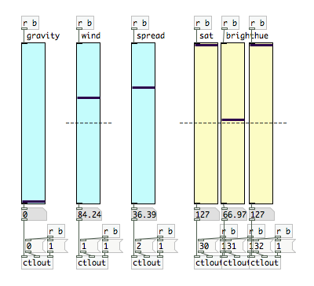

Recently I performed with a musical group, creating generative imagery as a backdrop. I decided try using quartz composer again, primarily because it renders graphics so quickly and smoothly, but also because it’s fairly easy to put something together. Unfortunately I ran into a significant roadblock. Quartz composer has no way to control elements while they are running. Although you can completely restructure and modify your script while it is running, there are no interface elements to control simple changes in values. Obviously, this makes QC so much less valuable as a performance tool.
Having already set up most of my script in Quartz Composer I decided to find a way to control it some other way. Pure Data, an application similar to Quartz but for the production of sound, allows you to easily build interfaces. The data is then sent out of pure data as midi controller values, sent through a virtual midi channel, and grabbed by Quartz Composer. From there the values can be used for whatever is necessary.
Figuring out the details took a little while and some help from my friend Michael Scoot-Nelson, but the setup is actually quite simple. In Pure Data, just set up as many controller as you need in the form of sliders or other UI elements.

In this case, I have a number of vertical sliders labelled for a particular application. Above each controller I have an object which receives a bang [r b]. In Pure Data the value from each slider is only sent when the slider is changed. Sending a bang to the value ‘b’ pushes all the values down and sends them out to the midi channel. The Sliders should be set to a range from 0-127.
The values from the sliders are plugged into the first inlet of control out objects (ctlout). The ctlout objects also need a controller number and a channel number. These are used to get the value on the other end. The channels can all be set to one, and each slider should have it’s own controller number.

In Quartz composer, a ‘Midi Controller Receiver’ object will grab the values sent from Pure Data. Viewing it’s settings in the inspector, the number of inputs can be changed. Each input is listed with an integer, these are the controller numbers which must be matched to the ones set in pure data. The channels being received can also be changed.
There is one final step to getting everything hooked up. In Pure Data, under Preferences > Midi Settings must be set to an Midi Channel that Quartz Composer is listening for. On a Mac it’s easy to set up this channel with the IAC Driver in Audio Midi Setup.

I also created this little guy here. One element I was controlling in Quartz Composer (a particle generator) could only be set on or off and I needed it to vary smoothly. This creates what is essentially a pulse width modulation simulated analog output. Pressing the ‘on’ and ‘off’ buttons do just that, and pressing the pwm toggle lets you use the slider to set it more or less on.
Metro’s turn the output to on every tenth of a second. It is then turned off (ten times a second) after a short delay (less than a tenth of a second). If the slider is at the bottom it turns back off almost immediately, so for the greater part of a second it is off. If the slider is at the top, it takes nearly a tenth of a second to turn back off, so it is mostly on. In the middle it will be on half the time. The result, at least for my particle generator, was the appearance of it’s rate changing while really it was just turning on and off very quickly. I’m not sure where else this would be useful, but here it is.
It might be a little hard to read, but if it would be useful to anyone I can upload the pd file somewhere.
Glenn Francis Murray
You may have just given me the last *push* I needed to learn Pure Data.
By the way, pretty sure you’d already know (and depending on your setup it may not be useful), but if you’re running your QuartzComposer visualisations with the composer (rather than in a Cocoa app or similar) you can view published (to root) inputs with the Patch Inspector, as long as your view is in the root pane.
Another trick which I find handy for live tweaking, is that if you have an element, say, LFO, and you want to tweak the amplitude live – is that if you publish the amplitude value directly, the GUI (patch inspector) will presume that the value can be anything, and just give you a text box with a rotator knob. *However*, if you insert an input splitter on that parameter, then look at the second pane (command+2) of the properties of the input splitter, you can give the element a range. This will display itself in the inspector (if published, or if selected) with a nice little slider, which will map between the values you want from left to right. Just in case you didn’t know :P
There’s also an apps root published ports, although I don’t know how to access them. Some type of Mac voodoo I’m sure, maybe including foodstuffs like Cocoa – so using PureData seems like a nice solution. I’d much rather learn PD than Objective C.
Nice work, btw.
Chad
With MRMR or MSA Remote, you can build your own UIs and control QC via iPhones/iPads… pretty cool stuff, you should check it out.
George Toledo
I want to put this in a way that you can learn from, and you don’t take it as a criticism:
I think your using Pure Data is really cool, and I’ve had some similar setups going before. However, you can use QC to make workable faders, buttons, and other GUI elements by hit testing, using sample and holds, and built in patches like signal, watcher, etc. Just because people may not have openly posted much GUI type stuff on the web doesn’t mean it can’t be done.
So, you can write a qtz that use GUI interface, and then broadcast to your Graphics player for control, or write it all in one window. Whatever you want really. Not limited at two windows.
For you and your scenario, it may have well been quicker to use pre-written Pure Data stuff that you saw was available, and use MIDI (you could have done it with OSC as well). That’s one of the flexibilities of Quartz Composer. However, I just want to correct the assertion that QC has no way to control elements while they are running, as it’s very false. Then you conclude that it makes it less valuable as a performance tool. Really, it’s more that you were trying to learn QC as you were doing whatever you were working on, and for some reason it didn’t occur to you how to make faders, buttons, or knobs.
Besides actually making GUI in QC, which is well possible as I described, one can always create a control parameter interface using Xcode if you’re bundling an app, or just use the built in QC parameter control window.
Particle generators can also slowly ramp up via a number of ways using built in tools.
Not trying to come off as overly vigilant, it’s just that as someone who knows how to use QC, it’s clear that your article is based on many incorrect assertions out of the fact that you were attempting to actually learn QC as you were doing this, and are now conveying inaccurate facts.